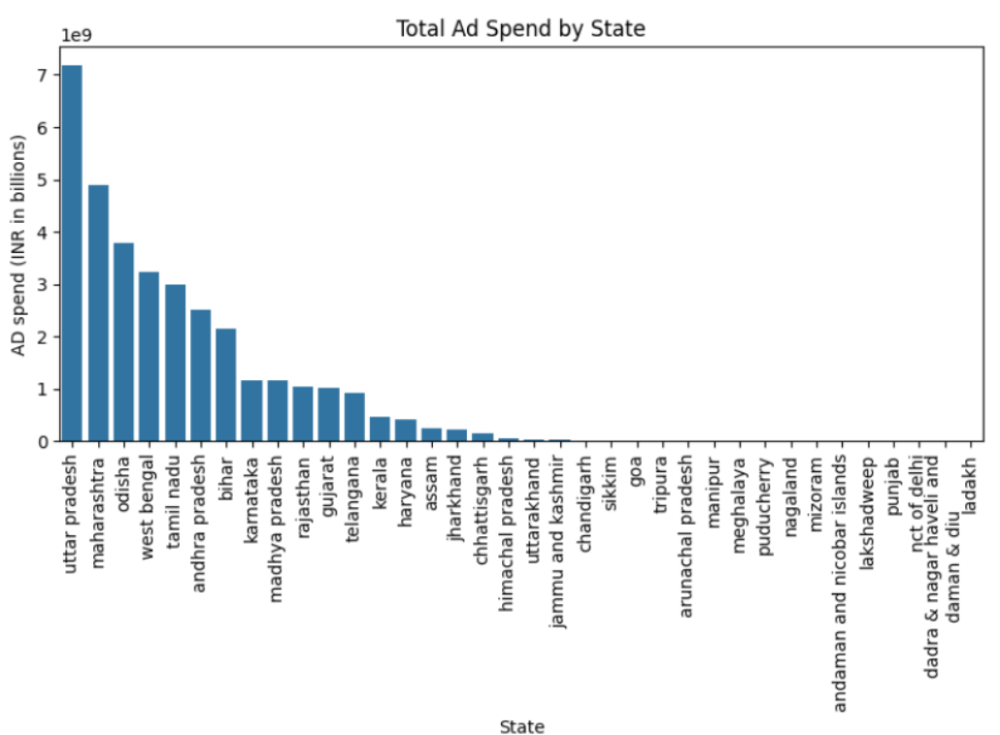
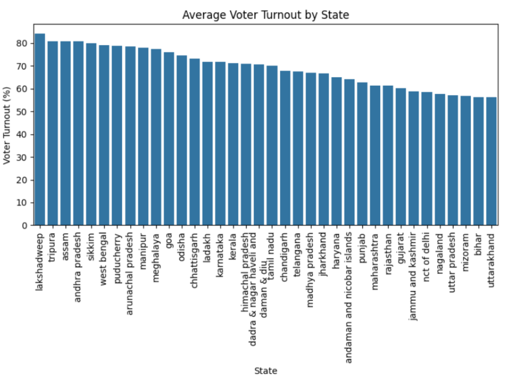
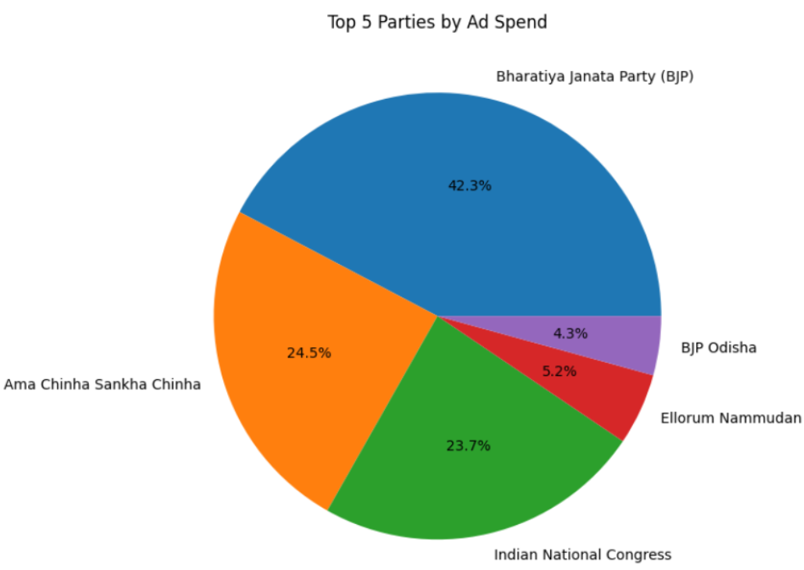
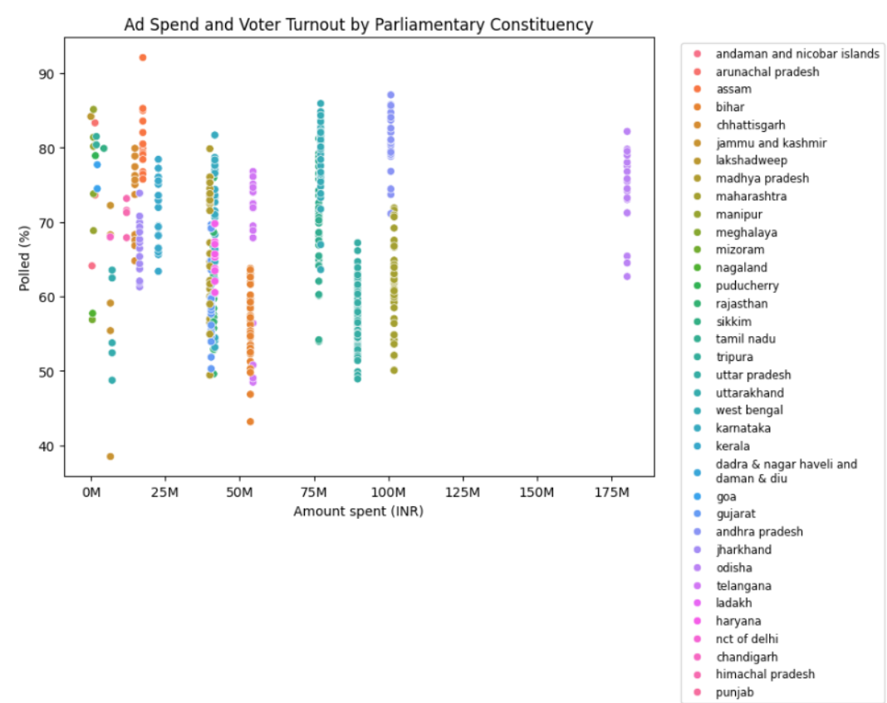
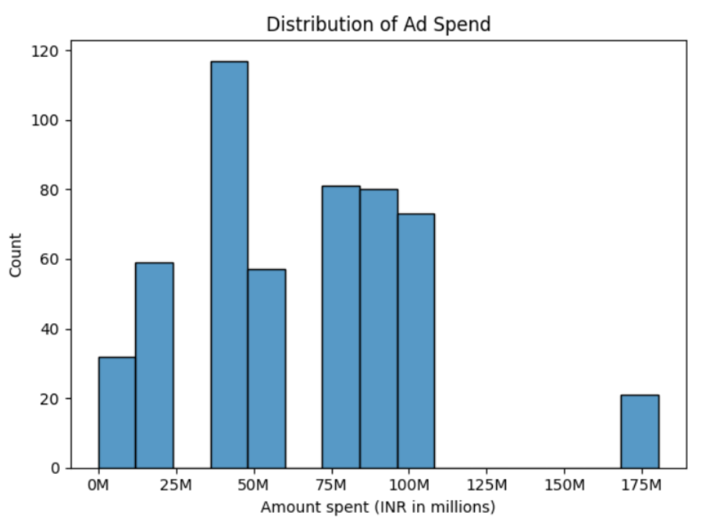
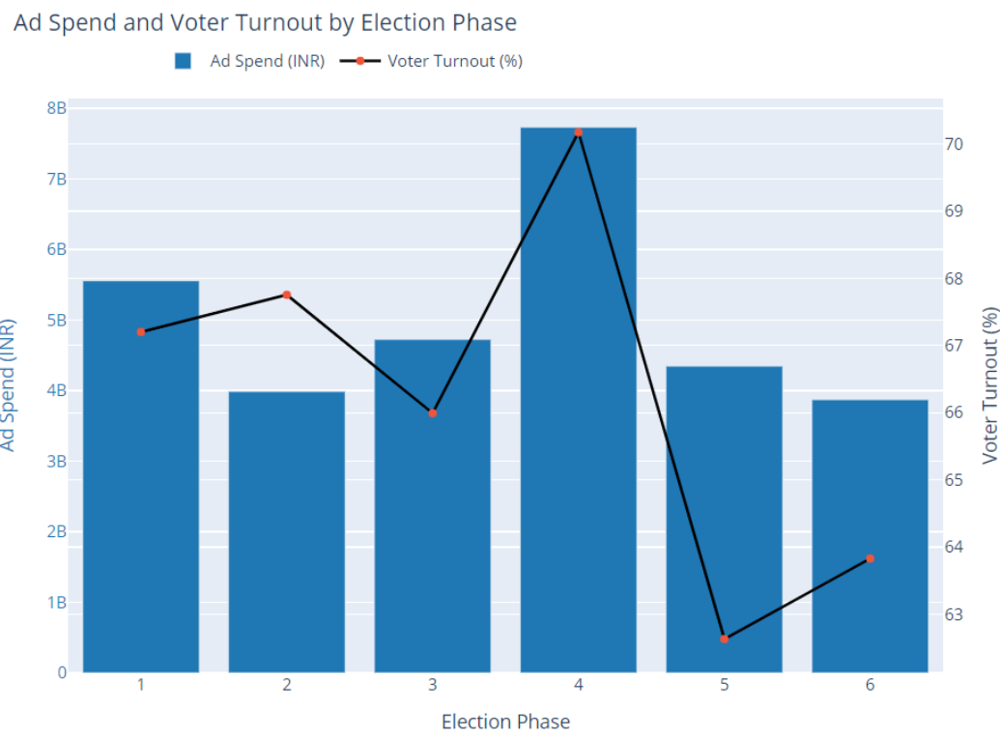

Political Ad Spending Analysis on Facebook & Instagram
Executive Summary
This project analyzes political advertising expenditure on Facebook and Instagram during the 2024 Indian General Elections and examines
whether higher digital ad spending translates into higher voter turnout. By combining election results, ad spending data, and advertiser-level
insights, the analysis uncovers spending patterns across states, parties, constituencies, and election phases. The findings reveal that digital ad spend
alone does not significantly influence voter participation, highlighting the complexity of voter behavior.
Business / Research Problem
-
Political parties invest heavily in digital advertising to influence voters and shape public opinion. However, there is limited empirical clarity on:
- Whether higher ad spending increases voter turnout
- How ad spending varies across states, constituencies, parties, and election phases
- Which regions receive disproportionately high or low advertising investment
This project aims to evaluate the effectiveness and distribution of political ad spending during elections.
Methodology
- Collected and analyzed datasets related to:
- Election results and voter turnout
- State-wise ad spending
- Advertiser-level spending and ad volume
- Cleaned and standardized state names to enable accurate joins.
- Merged election and ad spending data at the state and constituency level.
- Performed exploratory data analysis using:
- Aggregations
- Correlation analysis
- Visual analytics
- Built multiple visualizations to identify trends, distributions, and relationships..
Dashboard Features
Visualizing Statewise Ad Spending

- Highest Ad Spend: Uttar Pradesh leads with the highest ad spend, followed by Maharashtra and Odisha. West Bengal, Tamil Nadu, Andhra Pradesh, and Bihar also report substantial expenditures.
- Lowest Ad Spend: Lakshadweep, Dadra & Nagar Haveli, Daman & Diu, Andaman & Nicobar Islands, and Arunachal Pradesh have the lowest ad spend.
- This trend indicates that larger and more populous states typically allocate more budget for ads, reflecting their political importance and larger voter base.
Visualizing Average Voter Turnout by State

- Top States: Lakshadweep leads with nearly 80% voter turnout, followed by Tripura and Assam. Andhra Pradesh, Sikkim, and West Bengal also show strong engagement, above 70%.
- Lowest Turnout: Bihar, Uttar Pradesh, and Uttarakhand have the lowest turnouts, around 50-60%.
- Smaller states and union territories tend to have higher engagement compared to larger states with more advertising spend.
Analyzing Top Political Parties by Advertising Expenditure

- Top Spender: BJP leads with 42.3% of total ad spend, followed by Ama Chinha Sankha Chinha at 24.5% and Indian National Congress at 23.7%.
- Lower Spend: Ellorum Nammudan and BJP Odisha have lower spends at 5.19% and 4.27%, respectively.
- This highlights BJP's dominance in ad spending on Facebook and Instagram, investing nearly half of the total budget.
Visualizing Relationship Between Ad Spend and Voter Turnout by Constituency

- Higher ad spending does not directly correlate with higher voter turnout. Turnout remains clustered between 60% and 80% across constituencies, despite ad spends ranging from 0 to 150 million INR.
- This implies that factors like candidate appeal, campaign effectiveness, voter demographics, and historical voting patterns likely play a more significant role in determining voter turnout
Analyzing Distribution of Ad Spend

The histogram shows most constituencies cluster around ad spends of 50M to 100M INR, with fewer spending below 10M INR or above 150M INR. This indicates a concentration of ad spend within a specific range, with some notable exceptions of significantly higher expenditures
Analyzing Ad Spend and Voter Turnout by Election Phase

There is no clear trend between ad spend and voter turnout. Phases 1 and 4 have the highest ad spends, with phase 4 peaking at around 70% turnout, while phase 1 has a lower turnout of 67%. Conversely, phases with moderate ad spend, like 2 and 6, show lower voter turnout, and phase 5 has a notably low turnout despite moderate spending.
Key Results
- Uttar Pradesh, Maharashtra, and Odisha recorded the highest political ad spending.
- BJP dominated digital ad spending, accounting for the largest share among political parties.
- States with high voter turnout did not necessarily have high ad spend.
- The correlation between ad spend and voter turnout was nearly zero (-0.01).
- Constituency-level analysis showed no consistent pattern linking spending to voter engagement.
- Election phases with higher spending did not always result in higher turnout.
Business & Policy Recommendations
- Political campaigns should not rely solely on digital ad spending to boost voter turnout.
- Campaign strategies should focus more on:
- Grassroots engagement
- Local issues and candidate credibility
- Voter education initiatives
- Digital ad budgets should be optimized for messaging effectiveness, not just scale.
- Election authorities and researchers should consider non-digital factors when assessing voter behavior.
Skills & Tools Used
- Python
- Pandas & NumPy – data cleaning and transformation
- Matplotlib & Seaborn – statistical visualization
- Plotly – interactive visual analysis
- Data Merging & Feature Engineering
- Exploratory Data Analysis (EDA)
- Political & Social Data Analysis
- Data Storytelling
Conclusion
The comprehensive analysis of ad spending and voter turnout across various constituencies indicates that higher advertising expenditure does not necessarily lead to increased voter participation. Despite significant investments, particularly by major parties like the Bharatiya Janata Party (BJP), the correlation between ad spend and voter turnout remains ambiguous. This suggests that while advertising is an essential tool for political campaigns, it is not the sole driver of voter engagement.
Project Links
View GitHub Repository
← Back to Portfolio